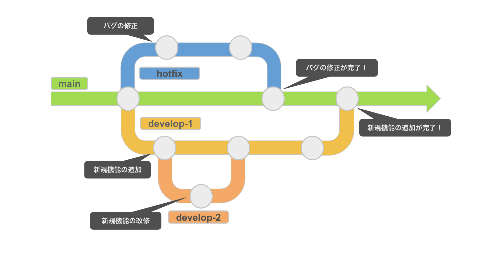
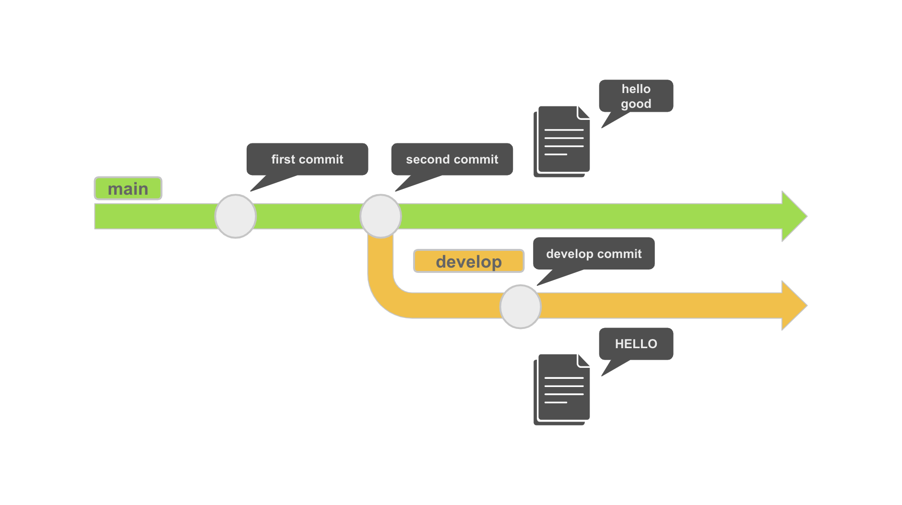

Git のブランチ機能
ブランチとは
ブランチは開発の本流から分岐し、本流の開発を邪魔することなく作業を続ける機能です。
ブランチを切ることにより、同時並行で目的別に作業をすることができます。
※ブランチを作ることを「ブランチを切る」と言います。
Git は main ブランチがデフォルトになっており、実は初級編では main ブランチで作業をしていました。
ブランチを活用できると以下のような流れで開発を進めることができるようになります。
- 他のメンバーの作業の影響を受けないように、メインのブランチから自分の作業専用のブランチを作成します。
- メインブランチから自分の作業専用のブランチに切り替えて作業を行います。
- 作業が終わったら、メインのブランチに自分のブランチの変更を取り込んでいきます。
このようにすることで、他のメンバーの作業による影響を受けることなく自分の作業を進めることができます。
また、作業単位で履歴を残すことで、問題が発生した場合に原因となる変更箇所の調査や対策を行うことが容易になります。
また、Git ブランチには以下の特徴があります。
- 1つのブランチから複数のブランチを作ることができる
- 作業ブランチを元に新たなブランチを作ることができる

現在作業をしているブランチは以下のコマンドで確認をすることができます。
git branch
git branch コマンドを実行すると、ローカルリポジトリ内のブランチ名の一覧を以下のように表示されます。
現在作業しているブランチの左隣に*が表示されます。
いまは main ブランチしかないため表示されるブランチ名を1つのみですが、
ブランチを増やすと現在作業していないブランチの名前もこのコマンドで確認することができます。
* main
Git のコミットログがない場合はブランチ名は表示されないので、コミットをした上でgit branchコマンドを実行しましょう。
一般的な開発プロジェクトでは main ブランチの内容が納品物（テストが完了した最新のソースコード）となるため、
機能の改修や追加する場合はこの main ブランチから開発用のブランチを切った上で作業を行います。
ローカルリポジトリと同様にリモートリポジトリ（GitHubなど）にもブランチが存在します。
リモートリポジトリのブランチは git push コマンドを実行する際にブランチ名を指定することで生成されます。
ブランチを使ってみよう
それでは開発用のブランチを作ってみましょう。
ブランチ名は自由につけることができますが、今回のブランチ名は develop にしましょう。
git branch コマンドの後ろに作成したいブランチの名前を指定すると同じ名前のブランチを作ることができます。
git branch develop
再度 git branch コマンドを実行すると以下のようにブランチの一覧が表示されます。
develop ブランチが作成できているかを確認してみましょう。
develop
* main
develop ブランチができていることが確認できたと思いますが、現在作業しているブランチを意味する*は main ブランチの左隣にあります。
つまり、ブランチを作ることができたものの、作成したブランチ（develop）を作業ブランにすることができていません。
まだ main ブランチが作業ブランチとなっている状態のため、作業ブランチを develop ブランチに切り替えてみましょう。
ブランチの切り替えは git checkout コマンドで行うことができます。
git checkout [切り替えたいブランチの名前]
切り替えようとしたブランチがない場合は以下のようなエラーが表示されます。
error: pathspec '存在しないブランチ名' did not match any file(s) known to git
このエラーが発生した場合は、git branch コマンドでブランチを作ってもう一度トライしてみましょう。
今回は develop ブランチに切り替えたいので、以下のコマンドを実行しましょう。
git checkout develop
それでは再度 git branch コマンドで develop ブランチが作業ブランチになっているかを確認してみましょう。
develop の左隣に * があればブランチの切り替えに成功です！
* develop
master
続いて、切り替えた develop ブランチでファイルを編集をしてみましょう。
master ブランチで作成した sample.txt には hello と書かれていますが、
これを develop ブランチでは HELLO に上書きをします。
echo HELLO > sample.txt
ファイルの上書きのコマンドを実行できましたら、cat コマンドでsample.txtが上書きできているかを確認しましょう。
cat コマンドの実行結果が以下の通りであれば成功です。
HELLO
ではここで、git status コマンドでステータスを確認してみましょう。
On branch develop
Changes not staged for commit:
(use "git add <file>..." to update what will be committed)
(use "git restore <file>..." to discard changes in working directory)
modified: sample.txt
no changes added to commit (use "git add" and/or "git commit -a")
On branch develop は develop ブランチで作業していることを意味しています。
Changes not staged for commit は修正はしたもののまだ git add を実行していないため、
コミットができないファイルをあるよという意味です。
その下に modified: sample.txt と表示されていますが、これは sample.txt に変更が発生しているという意味になります。
それでは以下のコマンドを実行して、今回編集した sample.txt の変更内容を Git に登録してみましょう。
ブランチ名が変わってもこのフロー（作業ディレクトリ → ステージングエリア → ローカルリポジトリ）は変わりません。
git add sample.txt
git commit -m "develop commit"
コミットが無事完了できたかをgit log コマンドで確認してみましょう。
コミットのメッセージが develop commit となっているコミットログが残っていれば成功です！
commit 1be05c74b8ae9ce1f8b1a09510b1367c88e1100e (HEAD -> develop)
Author: corgi9n <arapon1015@gmail.com>
Date: Fri Mar 11 11:21:55 2022 +0900
develop commit
commit 0336368ff10d1f69849cd5beeda1cf1ed274bb6d
Author: corgi9n <arapon1015@gmail.com>
Date: Fri Mar 11 03:54:55 2022 +0900
second commit
commit 5c670db6fc4a8d109a5e2724c421cd8105c2598f
Author: corgi9n <arapon@gmail.com>
Date: Fri Mar 11 03:44:55 2022 +0900
first commit
ここまでの Git 履歴を図表にすると、以下のようなイメージになります。
main ブランチの sample.txt には「hello」と「good」と書かれていますが、
develop ブランチでは「HELLO」に上書きされている状態です。

ではここで、また main ブランチに戻ってみましょう。
ブランチの切り替える git checkout コマンドで main ブランチに戻ることができます。
git checkout main
ここで再度 git log コマンドを実行してコミットログを確認してみましょう。
すると、さきほど develop ブランチでコミットした develop commit がないことが確認できます。
commit 0336368ff10d1f69849cd5beeda1cf1ed274bb6d
Author: corgi9n <arapon1015@gmail.com>
Date: Fri Mar 11 03:54:55 2022 +0900
second commit
commit 5c670db6fc4a8d109a5e2724c421cd8105c2598f
Author: corgi9n <arapon@gmail.com>
Date: Fri Mar 11 03:44:55 2022 +0900
first commit
念のため develop ブランチで編集した sample.txt の内容を cat コマンドで確認してみましょう。
以下のように develop ブランチで変更を加える前の状態になっていることが確認できます。
これは develop ブランチの作業が main ブランチに影響を与えていないことを意味しています。
hello
good
このようにブランチを活用すると、他のブランチに影響を与えることなく作業することができます。
ブランチを作るにはgit branchコマンドを、ブランチの切り替えにはgit checkoutコマンドを実行するとお伝えしましたが、実はgit checkoutコマンドの b オプションを使うと1回のコマンドでブランチの作成と切り替えを行うことができます。
仮にdevelopブランチを作成して切り替える場合は以下のようなコマンドになります。
git checkout -b develop